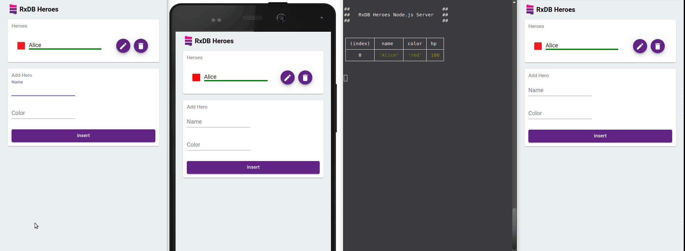

IndexedDB in React
IndexedDB is the built-in browser database that lets a React app store megabytes or gigabytes of structured data on the user's device, so the app loads instantly and keeps working offline. The raw API was designed for library authors, not for React components: it is callback-based, has no change events, and knows nothing about renders. This page shows you three ways to use IndexedDB in React: with the plain API and a custom hook, with a wrapper library like idb, and with RxDB and its React hooks. It also covers the problems that only show up in React projects, like Next.js server rendering, StrictMode, and Jest tests.

What is IndexedDB?
IndexedDB is a transactional, asynchronous key-value database that ships with every modern browser. It stores whole JavaScript objects (not only strings like localStorage) in so called object stores, and you can look them up by a primary key or by secondary indexes. If you have never used the raw API, the IndexedDB tutorial walks through it step by step.
The facts that matter for a React app:
| Property | IndexedDB | localStorage |
|---|---|---|
| API | Asynchronous, does not block rendering | Synchronous, blocks the main thread |
| Data types | Objects, arrays, Blob, File, Date, Map (structured clone) | Strings only |
| Storage size | Up to 60% of the total disk per origin in Chrome (MDN) | About 5 MB per origin |
| Queries | Primary key and index ranges | Key lookup only |
| Available in Web Workers | Yes | No |
| Change events | No | Only the storage event for other tabs |
Why Use IndexedDB in React
- Instant UI: Reading from a local database takes a few milliseconds instead of a network round trip, so you can render data without loading spinners. See zero-latency local-first apps.
- Offline support: The app keeps working without a connection. This is the base of every local-first and progressive web app.
- Larger data than localStorage: Thousands of documents, images, and files fit into IndexedDB. localStorage stops at about 5 MB and stores strings only.
- Less server load: Queries run on the client. When you replicate the data once, the server no longer answers every filter and sort request of the UI.
Option 1: Plain IndexedDB with a Custom React Hook
You can use IndexedDB in React without any library. The usual pattern is a small module that opens the database once, plus a custom hook that loads data inside useEffect.
At first, wrap the database opening in a promise and cache that promise. The cache matters in React because components mount and unmount often, and in development StrictMode runs every effect twice.
// db.ts
export type Todo = { id: string; title: string; done: boolean };
let dbPromise: Promise<IDBDatabase> | null = null;
export function openDB(): Promise<IDBDatabase> {
if (!dbPromise) {
dbPromise = new Promise((resolve, reject) => {
const request = indexedDB.open('todo-db', 1);
// runs only when the database is created or the version increases
request.onupgradeneeded = () => {
const db = request.result;
const store = db.createObjectStore('todos', { keyPath: 'id' });
store.createIndex('done', 'done');
};
request.onsuccess = () => resolve(request.result);
request.onerror = () => reject(request.error);
});
}
return dbPromise;
}
export async function getAllTodos(): Promise<Todo[]> {
const db = await openDB();
return new Promise((resolve, reject) => {
const request = db
.transaction('todos', 'readonly')
.objectStore('todos')
.getAll();
request.onsuccess = () => resolve(request.result);
request.onerror = () => reject(request.error);
});
}
export async function putTodo(todo: Todo): Promise<void> {
const db = await openDB();
return new Promise((resolve, reject) => {
const tx = db.transaction('todos', 'readwrite');
tx.objectStore('todos').put(todo);
tx.oncomplete = () => resolve();
tx.onerror = () => reject(tx.error);
});
}Then build a hook that loads the data and exposes a write function:
// useTodos.ts
import { useEffect, useState } from 'react';
import { getAllTodos, putTodo, Todo } from './db';
export function useTodos() {
const [todos, setTodos] = useState<Todo[]>([]);
const [loading, setLoading] = useState(true);
useEffect(() => {
let cancelled = false;
getAllTodos().then(result => {
// do not set state after the component has unmounted
if (!cancelled) {
setTodos(result);
setLoading(false);
}
});
return () => { cancelled = true; };
}, []);
async function addTodo(todo: Todo) {
await putTodo(todo);
// IndexedDB has no change events, so the hook has to reload by itself
setTodos(await getAllTodos());
}
return { todos, loading, addTodo };
}This works for a todo list. But the trouble starts as soon as the app grows:
- No reactivity: Only the component that called
addTodo()re-renders. A second component that also usesuseTodos()keeps showing stale data, because IndexedDB does not emit change events. You end up building your own event bus or moving the data into a global store. - No multi-tab sync: When the user has the app open in two tabs, a write in one tab is invisible in the other until a reload. Fixing this needs a BroadcastChannel and more code.
- Basic queries: You can query the primary key or one index with a key range. A filter like "open todos of project X sorted by date" needs a compound index or a full scan in JavaScript. The IndexedDB query guide shows why.
- Schema changes: Every new index needs a version bump and migration code in
onupgradeneeded. When another tab still holds the old version open, the upgrade is blocked until that tab closes. - No types at runtime: TypeScript types are only a promise. Nothing stops old or broken data from being stored, see IndexedDB with TypeScript.
- Slow when used wrong: Each transaction has a fixed cost. Writing 1k documents in one transaction takes about 80 milliseconds, but the same 1k documents written with one transaction each take about 2 seconds (benchmark details).
Writing all of this by hand is the reason most React projects use a library.
Option 2: IndexedDB Libraries for React
There are many IndexedDB wrappers. These are the ones that come up most often in React projects (npm versions checked on October 5, 2026):
- idb: A thin promise wrapper by Jake Archibald that mirrors the raw API. It removes the callbacks but adds no queries, no reactivity, and no React hooks.
- idb-keyval: A key-value store with
get()andset(), built on IndexedDB. It fits small things like settings or a persisted Zustand store, and nothing that needs queries. - localForage: A localStorage-like API that uses IndexedDB under the hood. Its last release (
1.10.0) was published on August 18, 2021. - RxDB: A local-first NoSQL database that stores data in IndexedDB (or other storages) and adds JSON schema validation, MongoDB-style (Mango) queries, React hooks, replication with any backend, encryption, and schema migrations.
| Feature | idb | idb-keyval | localForage | RxDB |
|---|---|---|---|---|
| Promise API | ✅ | ✅ | ✅ | ✅ |
| Queries beyond key lookups | ⚠️ index ranges | ❌ | ❌ | ✅ Mango queries |
| React hook for live data | ❌ | ❌ | ❌ | ✅ useLiveRxQuery() |
| Updates across browser tabs | ❌ | ❌ | ❌ | ✅ |
| Schema validation | ❌ | ❌ | ❌ | ✅ JSON Schema |
| Data migrations | ⚠️ manual | ❌ | ❌ | ✅ |
| Sync with your own backend | ❌ | ❌ | ❌ | ✅ HTTP, GraphQL, CouchDB, Supabase, and more |
| Encryption | ❌ | ❌ | ❌ | ✅ |
| Same code in React Native | ❌ | ❌ | ❌ | ✅ with the SQLite storage |
When a Simpler Library is Enough
You do not need a full database for every use case. When you only persist a few values like a theme, a draft, or a cached API response, idb-keyval is the smallest option and works well as the storage adapter for Zustand's persist middleware. When you want a thin layer over the raw API and plan to handle reactivity yourself, use idb.
RxDB makes sense when the data is the core of your app: many collections, queries that change with the UI, data that must sync with a server, or a codebase that also targets React Native, Electron, or Capacitor.
Option 3: IndexedDB in React with RxDB
RxDB ships a React integration with a context provider and hooks. Components read data through useLiveRxQuery() and re-render whenever the result changes, no matter if the change came from the same component, another component, another browser tab, or the replication with your server.
Install RxDB
npm install rxdb rxjs --savePick an IndexedDB Storage
RxDB stores data through a swappable RxStorage. For IndexedDB there are two options:
- The free Dexie.js RxStorage (
getRxStorageDexie()), which stores data in IndexedDB through Dexie.js. Use it for side projects and prototypes. - The premium IndexedDB RxStorage 👑 (
getRxStorageIndexedDB()), which talks to IndexedDB directly. It has faster reads and writes, a smaller bundle, and stores attachments as binary data instead of base64.
Switching storages is a configuration change, not a rewrite. The React code stays the same.
Create the Database Outside of React
Create the database in its own module and cache the promise. Components should never create the database themselves. This also protects you from React StrictMode, which runs effects twice in development: without the cached promise, RxDB would throw the error DB8 because a database with the same name already exists.
// database.ts
import { createRxDatabase, RxDatabase, RxCollection } from 'rxdb';
import { getRxStorageDexie } from 'rxdb/plugins/storage-dexie';
export type TodoDocType = {
id: string;
title: string;
done: boolean;
createdAt: number;
};
export type MyCollections = {
todos: RxCollection<TodoDocType>;
};
export type MyDatabase = RxDatabase<MyCollections>;
const todoSchema = {
version: 0,
primaryKey: 'id',
type: 'object',
properties: {
id: { type: 'string', maxLength: 100 },
title: { type: 'string' },
done: { type: 'boolean' },
createdAt: {
type: 'number',
minimum: 0,
maximum: 100000000000000,
multipleOf: 1
}
},
required: ['id', 'title', 'done', 'createdAt'],
indexes: ['createdAt']
} as const;
let dbPromise: Promise<MyDatabase> | null = null;
export function getDatabase(): Promise<MyDatabase> {
if (!dbPromise) {
dbPromise = (async () => {
const db = await createRxDatabase<MyCollections>({
name: 'tododb',
storage: getRxStorageDexie()
});
await db.addCollections({
todos: { schema: todoSchema }
});
return db;
})();
}
return dbPromise;
}Provide the Database to Your Components
RxDatabaseProvider makes the database available to every component below it.
// App.tsx
import { useEffect, useState } from 'react';
import { RxDatabaseProvider } from 'rxdb/plugins/react';
import { getDatabase, MyDatabase } from './database';
import { TodoList } from './TodoList';
import { AddTodo } from './AddTodo';
export function App() {
const [db, setDb] = useState<MyDatabase>();
useEffect(() => {
getDatabase().then(setDb);
}, []);
if (!db) {
return <span>Loading database...</span>;
}
return (
<RxDatabaseProvider database={db}>
<AddTodo />
<TodoList />
</RxDatabaseProvider>
);
}Render a Live Query
useLiveRxQuery() subscribes to a query when the component mounts and unsubscribes when it unmounts. There is no manual cleanup code.
// TodoList.tsx
import { useLiveRxQuery } from 'rxdb/plugins/react';
import type { TodoDocType } from './database';
export function TodoList() {
const { results: todos, loading } = useLiveRxQuery<TodoDocType>({
collection: 'todos',
query: {
selector: { done: false },
sort: [{ createdAt: 'asc' }]
}
});
if (loading) {
return <span>Loading...</span>;
}
return (
<ul>
{todos.map(todo => (
<li key={todo.id}>
{todo.title}
{/* RxDocuments can be modified directly */}
<button onClick={() => todo.patch({ done: true })}>Done</button>
<button onClick={() => todo.remove()}>Delete</button>
</li>
))}
</ul>
);
}Write Data from a Component
useRxCollection() returns the collection. It is null on the first render, so check it before writing.
// AddTodo.tsx
import { useState } from 'react';
import { useRxCollection } from 'rxdb/plugins/react';
import type { TodoDocType } from './database';
export function AddTodo() {
const collection = useRxCollection<TodoDocType>('todos');
const [title, setTitle] = useState('');
async function onSubmit(event: React.FormEvent) {
event.preventDefault();
if (!collection || !title) {
return;
}
await collection.insert({
id: crypto.randomUUID(),
title,
done: false,
createdAt: Date.now()
});
setTitle('');
}
return (
<form onSubmit={onSubmit}>
<input value={title} onChange={e => setTitle(e.target.value)} />
<button type="submit">Add</button>
</form>
);
}TodoList re-renders after the insert, even though AddTodo never told it about the change. Open the app in a second tab and the list updates there too.

More RxDB React Hooks
useRxQuery(): Runs a query once without subscribing. Use it for views that do not need live updates.useRxDocument(collection, id): Subscribes to a single document by its primary key, for example on a detail page.useRxDatabase(): Returns the database from the context.useReplicationStatus(replicationState): Exposes the sync state (syncing,error,lastSyncedAt) so you can show a sync indicator.
All hooks are documented on the React integration page. A full working app is in the React example in the RxDB repository.
CRUD Operations Outside of Hooks
The collection API works the same inside and outside of components, for example in event handlers or a service layer:
const db = await getDatabase();
// insert
await db.todos.insert({
id: 'a1',
title: 'Buy milk',
done: false,
createdAt: Date.now()
});
// bulk insert, one IndexedDB transaction for all documents
await db.todos.bulkInsert([
{ id: 'a2', title: 'Write docs', done: false, createdAt: Date.now() },
{ id: 'a3', title: 'Ship release', done: false, createdAt: Date.now() }
]);
// query
const openTodos = await db.todos.find({
selector: { done: false },
sort: [{ createdAt: 'desc' }],
limit: 10
}).exec();
// update
const doc = await db.todos.findOne('a1').exec();
await doc?.incrementalPatch({ done: true });
// delete
await doc?.remove();Signals Instead of Hooks
RxDB can also return signals instead of RxJS Observables. With the Preact Signals reactivity plugin, a query exposes its result as a signal through the double-dollar property ($$):
import {
PreactSignalsRxReactivityFactory
} from 'rxdb/plugins/reactivity-preact-signals';
const db = await createRxDatabase({
name: 'tododb',
storage: getRxStorageDexie(),
reactivity: PreactSignalsRxReactivityFactory
});
// the query result as a signal, updated on every change
const todosSignal = db.todos.find().$$;IndexedDB with Next.js and Server-Side Rendering
IndexedDB exists only in the browser. When code that touches it runs on the server, Next.js (and every other SSR framework like Remix or Astro) fails with ReferenceError: indexedDB is not defined. This happens with the raw API, idb, localForage, and RxDB alike.
To fix this:
- Mark components that use the database with
'use client'in the Next.js App Router. - Only open the database inside
useEffect()or an event handler. Effects do not run on the server. - Never create the database at the top level of a module that is imported by a server component.
The App component above already follows these rules, because getDatabase() is only called inside useEffect(). When a library accesses window or indexedDB at import time, load the component with next/dynamic and ssr: false.
React StrictMode and IndexedDB
In development, React 18 and newer mount, unmount, and mount every component again in StrictMode to find missing cleanup code. With IndexedDB this causes two typical bugs:
- The database is opened twice: Each effect run calls
indexedDB.open()again and creates a second connection. Connections that are never closed later block version upgrades, andonblockedfires instead ofonupgradeneeded. Fix it by caching the open promise in a module, as shown in both examples above. - State is set after unmount: The first effect run resolves after its cleanup. Use a
cancelledflag in the cleanup function, or use a hook that handles the subscription for you, likeuseLiveRxQuery().
Testing React Components that Use IndexedDB
Jest and Vitest run in Node.js with jsdom, and jsdom does not implement IndexedDB. Tests fail with indexedDB is not defined. There are two ways to fix it:
- For the raw API, idb, or localForage, add the fake-indexeddb package and import
fake-indexeddb/autoin your test setup file. It adds an in-memory IndexedDB to the global scope. - With RxDB, swap the storage instead. The memory RxStorage keeps data in memory, and starts empty for every test. The components do not change because they only use the hooks.
// database.test-setup.ts
import { createRxDatabase } from 'rxdb';
import { getRxStorageMemory } from 'rxdb/plugins/storage-memory';
const db = await createRxDatabase({
name: 'test-db',
storage: getRxStorageMemory()
});More patterns are on the testing page.
Storage Limits and Data Persistence
IndexedDB data is not guaranteed to stay forever. Keep these limits in mind when you plan a React app that stores data locally:
- Quotas: Chrome lets one origin use up to 60% of the total disk size. Firefox gives a best-effort origin up to 10% of the disk or 10 GiB, whichever is smaller (MDN storage quotas). All browsers are compared in the IndexedDB max storage limit article.
- Safari's 7-day cap: Since March 2020, Safari deletes all script-writable storage, including IndexedDB, of a website the user has not interacted with for seven days of browser use. Web apps added to the home screen are exempt (WebKit blog).
- Eviction under storage pressure: When the device runs out of space, browsers delete data of "best-effort" origins first.
You can request persistent storage and check the current usage:
if (navigator.storage?.persist) {
const persisted = await navigator.storage.persist();
console.log('persistent storage granted:', persisted);
}
const { usage, quota } = await navigator.storage.estimate();
console.log(`using ${usage} of ${quota} bytes`);Because local data can always be lost, important data should also exist on a server. RxDB solves this with its Sync Engine, which replicates the IndexedDB data with your backend and resolves conflicts.
IndexedDB Performance in React
IndexedDB is fast at reading and writing many documents in one transaction, and slow at many small transactions. For a React app this means:
- Write in batches. Use
bulkInsert()instead of callinginsert()in a loop. - Use indexes for the fields you filter and sort on, so a query does not scan the whole store.
- Do not run the same query in many components. RxDB caches query results through its QueryCache and reuses them across components.
- Move heavy work off the main thread with the Worker RxStorage so database work does not block rendering.
The chart shows the performance of the browser-based RxDB storages (lower is better):
Alternatives to IndexedDB for React Apps
IndexedDB is not the only place to store data in a React app. The browser storage comparison covers all options in detail:
- OPFS: The Origin Private File System gives fast file access inside a Web Worker. The storage performance comparison shows how the OPFS RxStorage compares to IndexedDB.
- localStorage: Fine for small data sets. The RxDB localStorage storage is free and uses the same API.
- SQLite: The right choice for React Native, Capacitor, and Ionic, where IndexedDB is not available.
With RxDB, all of these are storage options of the same database, so you can move from IndexedDB to OPFS or SQLite without changing your components.
FAQ
Can I use IndexedDB in React?
Yes. IndexedDB is a browser API and works in any React app that runs in the browser. Call it inside useEffect() or event handlers, never during rendering, and cache the open connection in a module. For live updates across components and tabs, use a database with React hooks like RxDB.
What is the best IndexedDB library for React?
It depends on the data. idb-keyval is enough for a few key-value pairs. idb is a thin promise wrapper without React hooks. RxDB adds JSON schema validation, Mango queries, React hooks, and replication with any backend, which fits apps where local data is the core of the product. The IndexedDB wrapper comparison lists all options.
How do I make React re-render when IndexedDB data changes?
IndexedDB has no change events, so React cannot know when data was written. You have to reload the data after every write or use a library that emits changes. RxDB's useLiveRxQuery() re-renders the component whenever the query result changes, including writes from other components, other browser tabs, and the server replication.
Why do I get 'indexedDB is not defined' in Next.js?
Because the code runs on the server, where IndexedDB does not exist. Add 'use client' to the component, open the database only inside useEffect(), and load components that touch IndexedDB at import time with next/dynamic and ssr: false. The same error appears in Jest and Vitest, where you can use fake-indexeddb or the RxDB memory storage.
Should I use IndexedDB or localStorage in React?
Use IndexedDB for anything beyond a few small values. localStorage is synchronous, so every read blocks rendering, it stores only strings, and it is limited to about 5 MB. IndexedDB is asynchronous, stores objects and files, and can hold gigabytes. The localStorage vs IndexedDB comparison has benchmarks for both.
Does IndexedDB work in React Native?
No. React Native does not run in a browser and has no IndexedDB. Use SQLite or another native storage instead. With RxDB you keep the same queries and React hooks and only swap the storage to the SQLite RxStorage.
How much data can IndexedDB store?
It depends on the browser and the free disk space. Chrome allows one origin up to 60% of the total disk size, Firefox up to 10% of the disk or 10 GiB for best-effort storage. Safari deletes the data of sites that were not used for seven days. Details per browser are in the IndexedDB storage limit article.
Is IDBRequest constructible via new IDBRequest()?
No. IDBRequest is an interface of the IndexedDB API, and calling new IDBRequest() throws TypeError: Illegal constructor. The browser creates IDBRequest objects for you when you run an asynchronous operation like .put(), .get(), or .openCursor() on an IDBObjectStore or IDBIndex.
Does clearing the browser cache delete IndexedDB data?
Not always. Clearing only cached images and files keeps IndexedDB data, but clearing "Cookies and other site data" deletes all IndexedDB databases of that site. Safari also deletes IndexedDB data of sites the user has not interacted with for seven days. This is why local-first apps should back up data to a server with a sync mechanism.
Is IndexedDB available in service workers?
Yes. IndexedDB works in Service Workers, Web Workers, and Shared Workers. localStorage is not available in workers because it is synchronous, so IndexedDB is the main way for a Service Worker to cache responses, queue offline requests for background sync, or store push notification settings. The Worker RxStorage runs the whole RxDB storage inside a worker.
Can complex objects like CryptoKey or FileSystemDirectoryHandle be stored in IndexedDB?
Yes. IndexedDB stores values with the structured clone algorithm, so you can store CryptoKey instances (also non-extractable ones), FileSystemDirectoryHandle and FileSystemFileHandle references for the File System Access API and OPFS, and Blob, File, Map, Set, and Date objects. Functions and DOM nodes cannot be stored.
Does aborting onupgradeneeded prevent database creation in IndexedDB?
Yes. When you abort the upgrade transaction inside onupgradeneeded (with request.transaction.abort()), the whole upgrade is rolled back. When this was the first creation of the database, no database is stored at all and the open request fails with an AbortError.
How do you clear IndexedDB data programmatically in JavaScript?
Call indexedDB.deleteDatabase('name') to delete a whole database. It returns an IDBOpenDBRequest with onsuccess, onerror, and onblocked handlers, where onblocked fires when another tab still has the database open. To clear only one object store, open a readwrite transaction and call .clear() on the store. In RxDB, collection.remove() deletes a collection and db.remove() deletes the database.
Follow Up
- Build your first app with the RxDB Quickstart.
- Read the React integration docs for all hooks.
- Learn the raw API in the IndexedDB tutorial.
- Compare React databases and ReactJS storage options.
- Check out the RxDB GitHub repository and leave a star ⭐ if you find it useful.